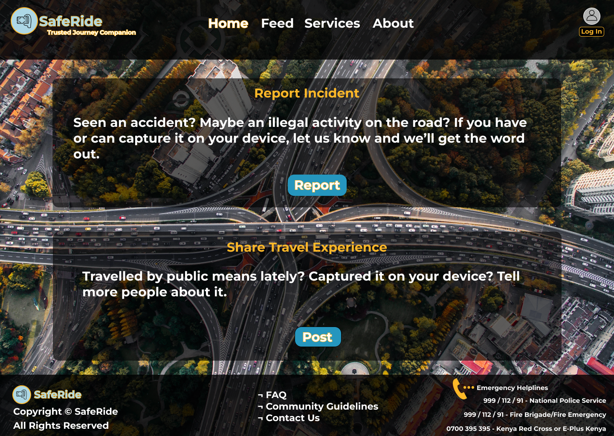
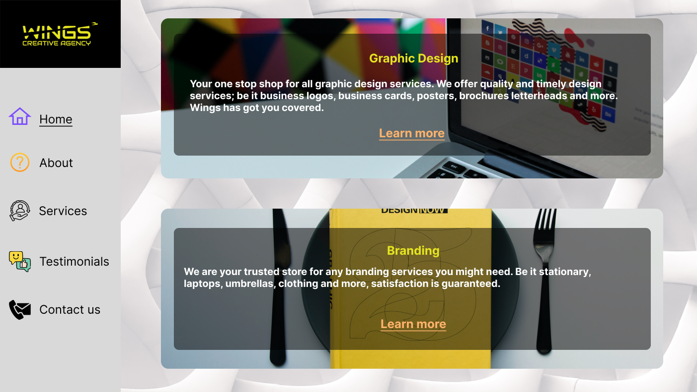
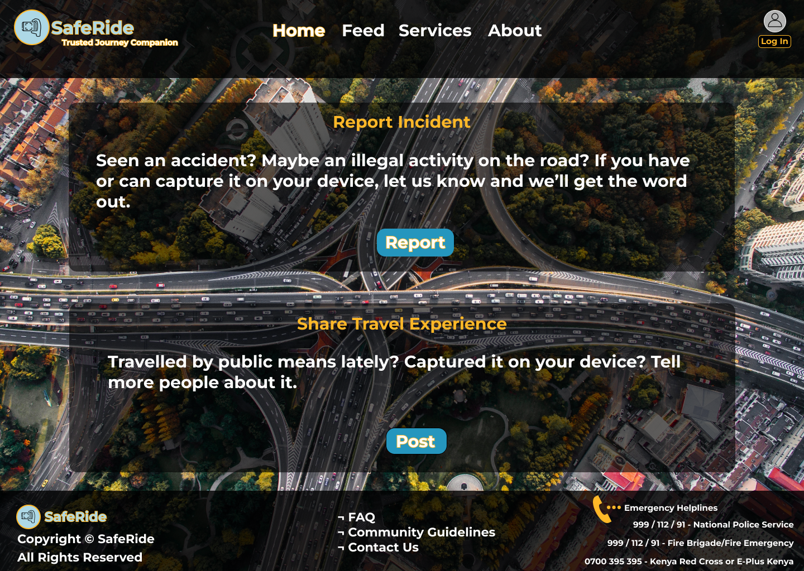
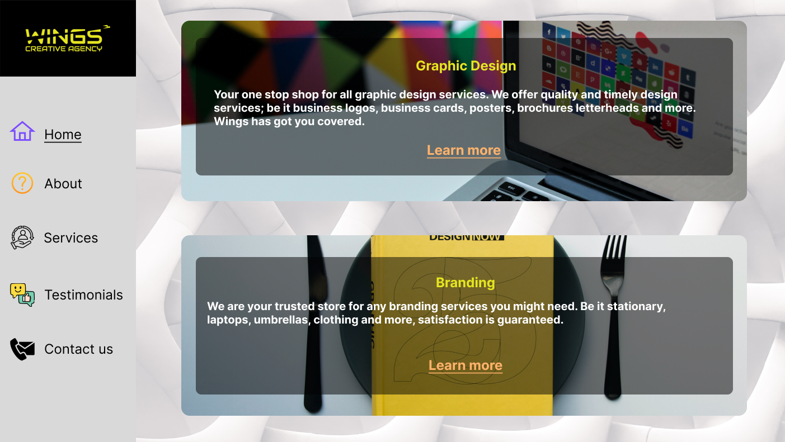
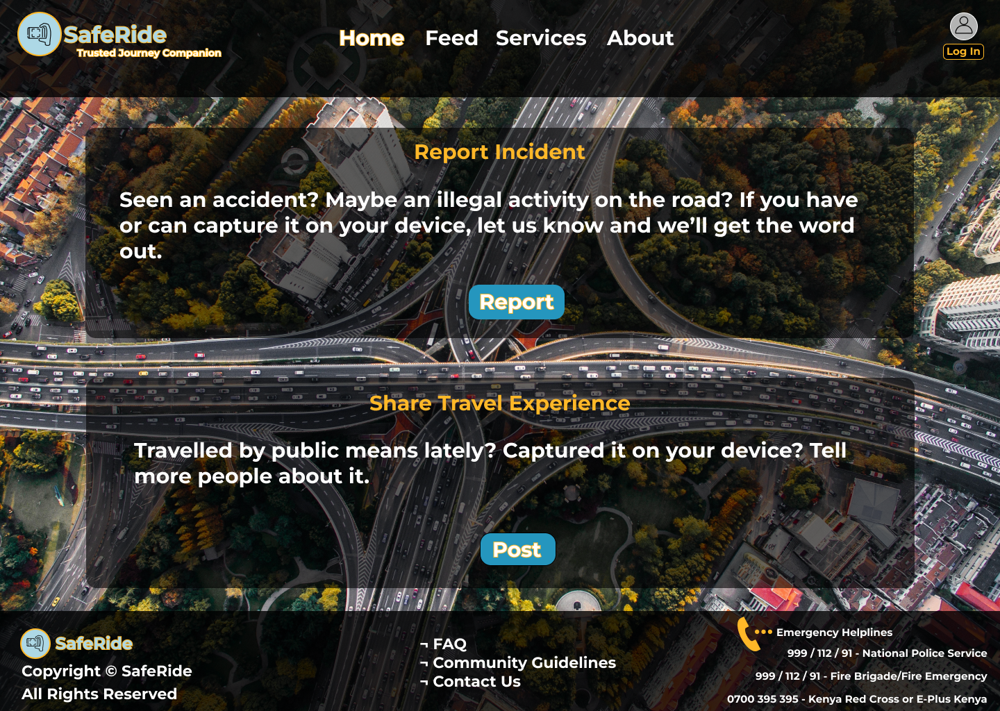
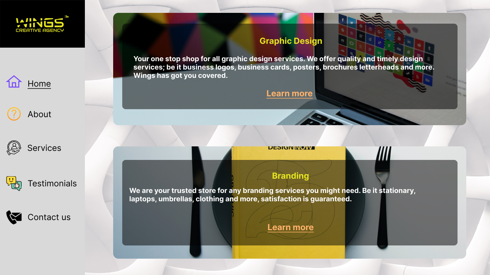

Software Design. Interfaces. Frontend. Strategy, UX & more.
I'm Frank, a software designer based in Kenya with over 2 years of diverse experience. I specialize in crafting UI/UX interfaces, frontend development, and aligning business objectives with user needs. My passion lies in tackling diverse challenges in the dynamic design landscape.

